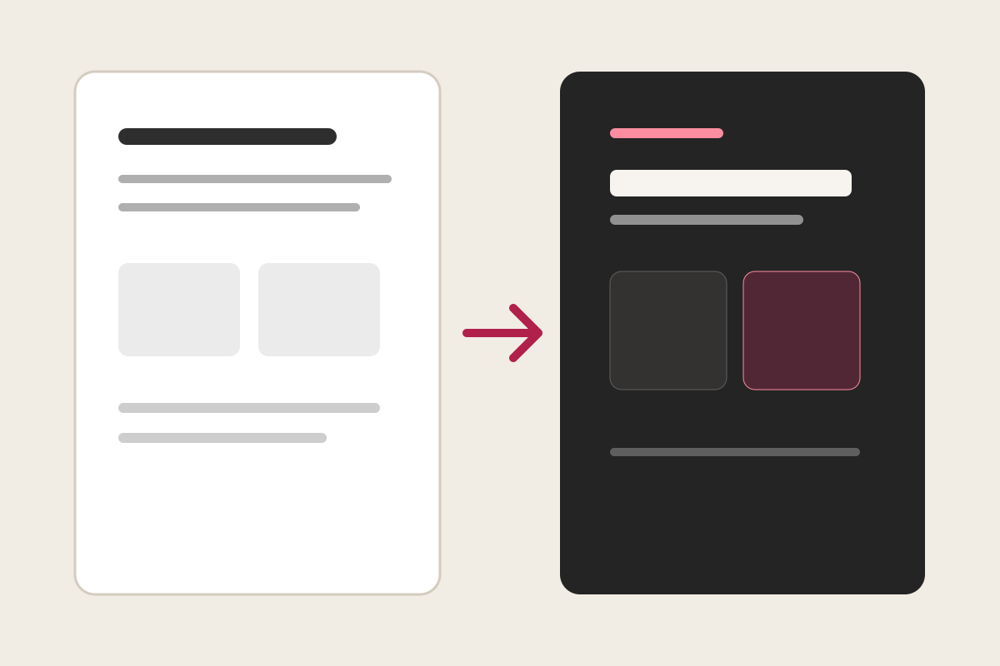

Native presentation structures written as readable Quire source.
Use cards as semantic metric-and-label pairs.
The image is structure, not pasted HTML.
The deck remains readable, reviewable text.
Quire turns intent into a consistent visual system.

Full-width media still carries native captioning and attribution.
The first table column labels each bar; the second supplies its value.
Quire converts ordered rows into a deterministic line chart.
The renderer calculates segments and keeps the legend readable.
Sequence is already present in the source.
State the presentation goal.
Let the agent write Quire source.
Read and revise the local file.
Open it directly in the browser.
The same rows become a timeline when intent changes.
Write and present from one local file.
Expand the native visual vocabulary.
Share reusable authoring skills.
The first item leads; the following items form the supporting layer.
One clear idea controls the slide.
Data makes it credible.
Layout makes it legible.
The browser makes it presentable.
Visual controls change emphasis without coordinates or CSS.